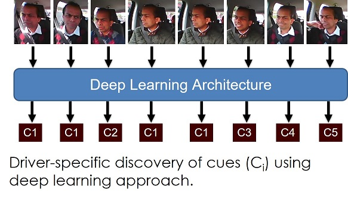
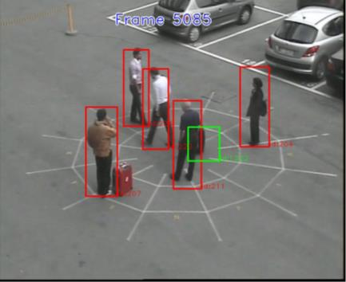

Dr Ardhendu Behera, Reader (Associate Professor) in Computer Vision and Artificial Intelligence
Department of Computer Science, Edge Hill University
Past Research Projects
Autonomous Intelligent Feature for Understanding Drivers' Behaviour Pattern
 Funded by: Research Investment Funding (RIF), Edge Hill University .
The purpose of the project is to monitor drivers activity in real-time. The aim is to better summarise and develop behaviour models of individual drivers.
A. Behera and A. H. Keidel, Latent Body-Pose guided DenseNet for Recognizing Driver’s Fine-grained Secondary Activities.
15th IEEE International Conference on Advanced Video and Signal Based Surveillance (AVSS) 2018, DOI:
10.1109/AVSS.2018.8639158,
PDF.
A. Behera, A. H. Keidel and B. Debnath, Context-driven Multi-stream LSTM (M-LSTM) for Recognizing Fine-Grained Activity of Drivers.
40th German Conference on Pattern Recognition (GCPR) 2018, DOI:
10.1007/978-3-030-12939-2_21,
PDF.
Human-Robot Social Interactions
A. Behera, A. G. Gidney, Z. Wharton, D. Robinson and K. Quinn, A CNN Model for Head Pose Recognition using Wholes and Regions.
IEEE International Conference on Automatic Face and Gesture Recognition (FG 2019).
Preprint, DOI: 10.1109/FG.2019.8756536
Z. Wharton, E.Thomas, B. Debnath and A. Behera, A Vision-based Transfer Learning Approach for Recognizing Behavioral Symptoms in People with Dementia.
15th IEEE International Conference on Advanced Video and Signal Based Surveillance (AVSS) 2018.
Preprint, DOI:
10.1109/AVSS.2018.8639371,
PDF, Dataset.
B. Debnath, M. O’Brien, M. Yamaguchi and A. Behera, Adapting MobileNets for mobile based upper body pose estimation.
15th IEEE International Conference on Advanced Video and Signal Based Surveillance (AVSS) 2018.
Preprint,DOI:
10.1109/AVSS.2018.8639378,
PDF.
Activity Recognition and Monitoring
G.Bleser, D. Damen, A. Behera,
G. Hendeby, K. Mura, M. Miezal et al., Cognitive learning, monitoring and assistance of industrial workflows using egocentric sensor networks.
PLoS ONE 10(6): e0127769, 2015, DOI: 10.1371/journal.pone.0127769.
A. Behera, A.G. Cohn and D.C. Hogg, Real-time Activity Recognition by Discerning Qualitative Relationships Between Randomly Chosen Visual Features.
The 25th British Machine Vision Conference (BMVC 2014), PDF.
A. Behera, M. Chapman, D.C. Hogg and A.G. Cohn, Egocentric Activity Recognition using Histograms of Oriented Pairwise Relations.
The 9th International Conference on Computer Vision Theory and Applications (VISAPP 2014), DOI:
IEEE Xplore,
PDF.
A. Behera, D.C. Hogg and A.G. Cohn, Egocentric activity monitoring and recovery.
Asian Conference on Computer Vision (ACCV 2012), DOI:
10.1007/978-3-642-37431-9_40,
PDF.
A. Behera, A.G. Cohn and D.C. Hogg, Workflow activity monitoring using dynamics of pair-wise qualitative spatial relations.
International Conference on Multimedia Modeling (MMM 2012), DOI:
10.1007/978-3-642-27355-1_20,
PDF.
S.F. Worgan, A. Behera, A.G. Cohn and D.C. Hogg, Exploiting petri-net structure for activity classification and user instruction within an industrial setting.
ACM International Conference on Multimodal Interfaces (MLMI 2011), DOI:
10.1145/2070481.2070502,
PDF.
Adaptive User Interface: Eye-based Human-Computer Interaction (HCI)
Funded by: Research Institute thematic Award (RITA), Edge Hill University. Partners: Psychology, Edge Hill University,
The Walton Centre NHS Foundation Trust,
Southport & Ormskirk Hospital NHS Trust
The aim of this multi-disciplinary research project is to develop an adaptive user interface that can be used by disable people
suffering from Spinal Cord Injury (SCI) or Motor Neurone Disease (MND). The adaptive nature of the interface is based
on the severity of the disability and can have a distinct impact on such people to express themselves in conversation
with their caregiver and families.
Intelligent Video Surveillance
Ferryman, D.C. Hogg, J. Sochman, A. Behera, J.A. Rodriguez-Serrano, S. Worgan et al., Robust abandoned object detection integrating wide area visual
surveillance and social context. Pattern Recognition Letters (PRL) 34(7), 2013, DOI: 10.1016/j.patrec.2013.01.018,
PDF.
C.J. Howard, T. Troscianko, I.D. Gilchrist, A. Behera, D.C. Hogg, Suspiciousness perception in dynamic scenes: a comparison of CCTV operators and novices.
Frontiers in human neuroscience, vol 7, 2013, DOI: 10.3389/fnhum.2013.00441.
C.J. Howard, T. Troscianko, I.D. Gilchrist, A. Behera, D.C. Hogg, Task relevance predicts gaze in videos of real moving scenes.
Experimental brain research 214(1), 2011, DOI: 10.1007/s00221-011-2812-y.
A. Behera, D.C. Hogg, C.J. Howard, I.D. Gilchrist and T. Troscianko, Visual attention-based approach for prediction of abnormalities in CCTV video surveillance.
Applied Vision Association Meetings 2011, 41(3).
C.J. Howard, T. Troscianko, I.D. Gilchrist, A. Behera, D.C. Hogg, Searching for threat: factors determining performance during CCTV monitoring.
Human factors, security and safety 2009, PDF.
Learning to Recognise Dynamic Visual Content from Broadcast Footage
Funded by EPSRC, Partners: University of Oxford and University of Surrey. The purpose of the project is to learn actions and activity from large volumes of video data and associated subtitles and other metadata. In order to better summarise and navigate these large volumes of video data, an important aspect of the project is to develop behaviour models of individual characters. More.
Cognitive Workflow Capturing and Rendering with On-Body Sensor Networks (COGNITO)

 Funded by: EU FP7, Partners: DFKI, University of Bristol,
CNRS, Trivisio, CCG and SmartFactory
Funded by: EU FP7, Partners: DFKI, University of Bristol,
CNRS, Trivisio, CCG and SmartFactory
The COGNITO project aims to develop principles, representations, formalisms and frameworks that will allow us to
build systems capable of observing, monitoring and learning from human users. The focus of the project on the development of technology which will enable systems to
automatically capture, learn and render user cognitive behavior and activity. More
Cognitive Systems Foresight: Human Attention and Machine Learning (HAML)
 Funded by EPSRC and Wellcome Trust, Partner: University of Bristol .
The main goal of this research is to develop a cognitive model that can explain human behaviour in a task involving naturalistic stimuli and high cognitive load.
This would help in taking necessary measures to prevent any potential crimes. The novelties in our approach are mainly: (1) study of human behaviour on a realistic task such as
threat assessment within a CCTV control room, (2) develop a model that incorporates the advanced computer vision and machine learning
techniques for recognition of objects and their activities and (3) apply this model to optimise the CCTV control room and explore partial automation.
Funded by EPSRC and Wellcome Trust, Partner: University of Bristol .
The main goal of this research is to develop a cognitive model that can explain human behaviour in a task involving naturalistic stimuli and high cognitive load.
This would help in taking necessary measures to prevent any potential crimes. The novelties in our approach are mainly: (1) study of human behaviour on a realistic task such as
threat assessment within a CCTV control room, (2) develop a model that incorporates the advanced computer vision and machine learning
techniques for recognition of objects and their activities and (3) apply this model to optimise the CCTV control room and explore partial automation.
Surveillance of Unattended Baggage and the Identification and Tracking of the Owner (SUBITO)

Funded by: EU FP7, Partners: Selex Galileo Ltd, Selex Elsag Spa, ONERA, L-1, CEA, University of Reading, VTT, Austrian Institute of Technology, Fiera di Genova, University of Oxford.
The SUBITO project was aimed to built a system that would provide automated real-time detection of abandoned baggage, identification of the individual who left the baggage and the fast determination of the current location of that individual or his/her followed path.
It is guided by end-user requirements to ensure that security personnel receive the technologies they need in order to deliver improved threat security.
More
Image Analysis for analysing growth rate of individual face of crystalline particles in microscopic images

Partners: Malvern Instruments Ltd, SPME at the University of Leeds. The main goal of this research is to develop a model for automatic detection of
individual crystalline particle in microscopic images and is able to provide the growth of each face of the detected crystalline particle over time.
Interactive Multimodal Information Management (IM2)

 Funded by: Swiss National Science Foundation (SNSF),
Partners: EPFL, University of Geneva, University of Bern, ETHZ.
Funded by: Swiss National Science Foundation (SNSF),
Partners: EPFL, University of Geneva, University of Bern, ETHZ.
IM2 is concerned with the development of natural multimodal interfaces for human-computer interaction. Multimodal refers to
the different technologies that coordinate natural input modes (such as speech, pen, touch, hand gestures, head and body movements,
and eventually physiological sensors) with multimedia system output (such as speech, sounds, and images). ltimately, these multimodal
interfaces should flexibly accommodate a wide range of users, tasks, and environments for which any single mode may not suffice.
The ideal interface should primarily be able to deal with more comprehensive and realistic forms of data, including mixed data
types (i.e., data from different input modalities such as image and audio). More